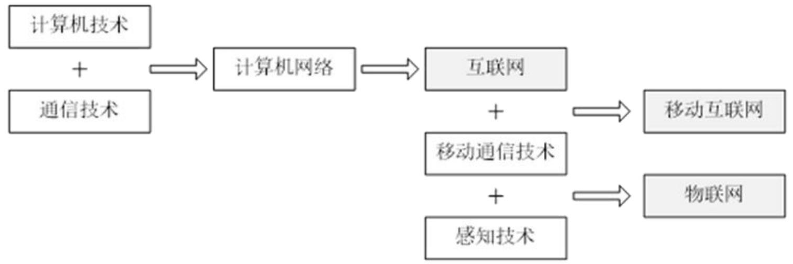
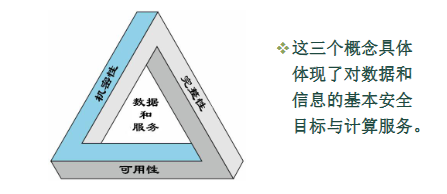

网络安全概述
物联网
物联网（IoT）是继计算机、互联网之后，信息产业的第三次发展浪潮，是未来计算与通信的大方向。
它的发展轨迹为：计算机+通信技术 ➔ 计算机网络 ➔ 互联网+移动通信技术 ➔ 移动互联网+感知技术 ➔ 物联网。

物联网的定义与架构
物联网是通过RFID、传感器、GPS、激光扫描器等采集设备，按约定协议，把任何物品与互联网连接起来，进行信息交换和通讯，以实现智能化识别、定位、跟踪、监控和管理的一种网络。
其他定义：具有感知、通信、计算功能的智能物体互联，实现泛在感知、可靠传输、智慧处理的智能服务系统。
物联网系统通常采用分层架构模型。
- 三层模型：
- 感知层（负责感知采集，如传感器、RFID标签、摄像头等）
- 网络层（负责传输汇聚，包括接入层、汇聚层和核心交换层等专用或公共网络）
- 应用层（面向业务，如智能交通、智能医疗、智能电网等）
- 四层模型：感知层 → 网络层 → 中间件层 → 应用层
- 在应用层和网络层之间增加了管理服务层（中间件层），用于数据挖掘、大数据存储与处理等。
物联网安全的定义与核心属性（★ 重点考点）
定义
物联网安全是指保护物联网的硬件、软件及其系统中的数据，使其不因偶然或恶意的原因遭到破坏、更改、泄露，从而保障物联网系统能够连续、可靠、正常地运行，提供不中断的服务。
物联网安全威胁和物联网安全技术是网络安全含义最基本的表现｡
物联网安全 = 所有保护物联网的方法（技术 + 管理） + 物联网本身存在的安全威胁。
其中物联网安全主要包括数据的安全、网络的安全和节点的安全。
- 数据安全：数据不被盗、不改、不丢
- 网络安全：网络不被攻击、不瘫痪
- 节点安全：每个物联网设备（传感器、摄像头等）本身安全
物联网安全属性
三大基本属性（CIA三元组）：
- 机密性 (Confidentiality)：确保信息只能被授权对象获取或理解，防止泄露。
- 数据机密性：确保隐私或机密信息不能被没权限的人使用、不能泄露给没权限的人。
- 隐私性：个人能控制自己的信息被谁收集、存在哪、能告诉谁。
- 完整性 (Integrity)：确保信息和程序只能在指定的和授权的方式下被修改，即使被修改也能被发现，避免遭到非授权篡改。
- 数据完整性：内容没被篡改、造假
- 系统完整性：系统没被搞坏、正常运行
- 可用性 (Availability)：确保系统能够迅速工作，可靠地为授权用户提供服务，不拒绝合法访问。

| 类别 | 机密性（防泄密） | 完整性（防篡改） | 可用性（防失效） |
|---|---|---|---|
| 硬件 | — | — | 设备被盗 / 禁用，无法提供服务 |
| 软件 | 未经授权复制软件 | 程序被修改，运行异常 / 执行恶意行为 | 程序被删除，无法访问使用 |
| 数据 | 非法读取、分析数据，泄露隐私 | 修改 / 伪造文件，破坏数据真实性 | 文件被删除，无法访问使用 |
| 通信线路 | 窃听消息、观察流量模式 | 消息被改 / 延迟 / 重放 / 伪造 | 消息被破坏 / 删除，网络不可用 |
三大延伸（扩展）属性：
- 可认证性 (Authentication)：确认通信实体或数据源的真实身份
- 对等实体认证（连接中的实体身份确认）：当两个实体在不同系统中实现相同协议时，就互为对等实体，通常指用户应用实体
- 数据源认证（数据来源确认）：为特定的数据单元（如数据报文）的来源提供确认。这里的数据源点主要指主机的标识
- 对等实体认证用在连接的建立阶段或者数据传输阶段。保证该实体没有进行假冒或对前面的连接进行非授权重放，而数据源认证应用于高安全级别的网络通信
- 可控性 (Controllability)：即数据的可靠性，指控制信息在授权范围内的流向和行为。验证身份后，判断其“能干什么”。
- 权限控制：系统需要能够控制谁能够访问系统或网络上的数据，以及如何访问，即对数据具有只 读或是修改属性
- 日志记录：系统还要将用户的所有网络活动记录在案
- 不可抵赖性/不可否认性 (Non-repudiation)也可以是可核查性：通信发生后，相关方不能否认自己曾经执行过的行为或发送/接收的信息。
物联网安全的产业现状
- 终端高危漏洞多（先天不足）：设备出厂时密码极简（，通信不加密，固件有漏洞且无法打补丁升级。
- 终端防护措施不足（后天裸奔）：物联网设备往往成本低、内存小，根本装不上杀毒软件
- 安全环节投资占比低（防范意识差）：极少提前规划安全防护
物联网安全威胁分析
主要原因：系统的开放性、系统的复杂性、人的因素
除了传统互联网的开放性、复杂性、系统软件漏洞及用户安全意识弱（如不更新密码）等系统层面原因外
- 规则和软件没写好（协议、系统与应用的漏洞）：网络协议，操作系统和应用系统的漏洞
- 恶意攻击（含合法用户）
- 网络物理设备的电磁泄露
也就是规则没定好（协议弱点）、代码没敲好（系统/应用漏洞）、架构没搭好（设计缺陷）、人没管好（合法用户攻击），甚至连设备硬件本身都在“漏风”（物理电磁泄露）
常见安全威胁及破坏的属性（★ 核心考点）
网络信息在传输过程中主要面临以下四种威胁手段，
截获 (Interception)：窃听通信内容或观察流量模式。➔ 破坏了机密性。
中断 (Interruption)：使通信、线路或服务不可用。➔ 破坏了可用性。
篡改 (Modification)：修改传输中的数据报文。➔ 破坏了完整性。
伪造 (Fabrication)：冒充他人发送虚假信息。➔ 破坏了可认证性。
听到了 ➔ 截获 ➔ 机密性；断掉了 ➔ 中断 ➔ 可用性；改掉了 ➔ 篡改 ➔ 完整性；装成别人 ➔ 伪造 ➔ 可认证性。
物联网的安全体系结构
为了应对上述威胁，物联网需要建立多重的端到端安全防御体系，与其网络架构相对应，物联网的安全架构可以根据物联网的架构分为：感知层 安全、网络层安全、应用层安全。
感知层安全：侧重于感知设备物理安全、RFID安全（如访问控制、密码算法）、传感器网络安全（如密钥管理、入侵检测等）。
网络层安全：侧重于无线与有线接入安全（如WLAN加密认证、3G/4G认证机制）、以及核心网传输安全（如 IPSec/VPN 数据加密）。
应用层安全：侧重于具体的业务数据处理安全、隐私保护、云安全（如云存储的访问控制与数据保密性）等。